Wisata Sejarah
Berikut adalah beberapa wisata sejarah yang ada di Solo :
- Pura Mangkunegaran 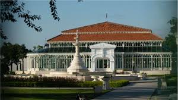
- Keraton Surakarta Hadiningrat 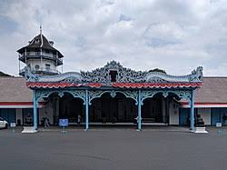
- Benteng Vastenburg 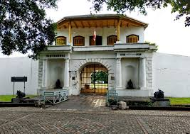
- Museum Batik Danar Hadi 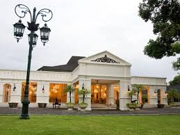
- Lokananta 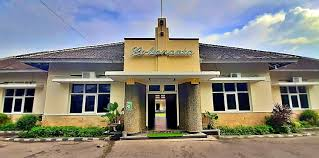
Tempat ini sarat dengan sejarah dan dibangun sejak tahun 1757. Pura Mangkunegaran masih dipakai sebagai tempat tinggal para Adipati Mangkunegaran. Kamu bisa menikmati pemandangan arsitektur bangunan yang indah di sini. Selain itu, kamu juga bisa melihat-lihat sambil belajar sejarah dari peninggalan Kerajaan Majapahit dan Mataram di Pura Mangkunegaran. Luangkan waktu ke sini pada hari Rabu, karena akan ada pertunjukan gamelan di sini.
Berlibur ke Solo memang enggak lengkap kalau enggak mampir ke Keraton Surakarta Hadiningrat. Ini juga merupakan salah satu destinasi wisata terpopuler yang Solo miliki. Daerah Keraton Surakarta Hadiningrat ini dibagi menjadi beberapa bagian, seperti Alun-alun Lor, Alun-alun Kidul, Sasana Sumewa, Siti Hinggil, dan masih ada beberapa bagian lainnya.vKeraton ini juga memiliki museum yang bisa kamu kunjungi. Museum tersebut berisi benda-benda koleksi peninggalan kerajaan. Cocok jadi wisata edukasi bagi siapapun yang datang ke sini.
Lokasi wisata bersejarah lainnya yang bisa kamu kunjungi adalah Benteng Vastenburg. Sudah dibangun sejak tahun 1745, benteng ini memiliki suasana yang asri karena banyak pohon yang tumbuh di sekitarnya. Di dalamnya terdapat benda-benda peninggalan sejarah, yang bisa kamu lihat beserta informasi sejarahnya. Biasanya para pengunjung banyak mengabadikan foto berlatar bangunan benteng klasik tapi tetap terlihat megah. Tempat ini juga mulai sering dipakai sebagai lokasi berbagai acara menarik, seperti festival musik, pagelaran budaya, hingga upacara.
Buat kamu yang masih tertarik dengan batik, Solo memiliki museum batik yang juga populer. Museum ini memamerkan berbagai corak batik yang ada di Indonesia. Batik-batik yang dipamerkan mulai dari yang klasik hingga kontemporer. Informasi yang ditunjukkan pada museum ini pun cukup jelas. Kamu bisa mengetahui nama batik dari tiap-tiap kainnya, dan belajar tentang sejarah asal hingga pembuatannya.
Lokananta merupakan studio rekaman pertama di Indonesia yang jadi tempat wisata di Solo. Masuk dalam tempat bersejarah karena Lokananta memiliki puluhan ribu keping piringan hitam dan ribuan master bersejarah, yang salah satunya adalah suara asli Soekarno saat membaca teks proklamasi. Usai direvitalisasi dan dibuka kembali pada 2023, Lokananta memiliki wajah yang lebih segar. Bukan hanya sebagai studio rekaman tertua, melainkan juga menjadi pusat kreativitas bagi seluruh musisi serta seniman. Kini Lokananta Solo memiliki tujuh arena yang bisa dinikmati, mulai dari Galeri Lokananta, Studio Rekaman Lokananta, Lokananta Live House, Taman Lingkar Lokananta, Panggung Amphitheater, Area Kuliner, dan Area Ritel Kreatif.
Wisata Seni
Berikut adalah beberapa wisata seni yang ada di Solo :
- Pasar Triwindu 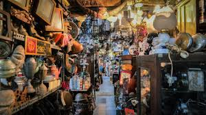
- Kampung Batik Kauman 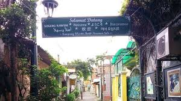
- Gedung Wayang Orang Sriwedari 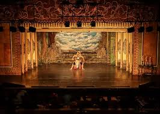
- Gedung Djoeang 45 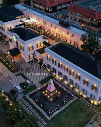
- Tumurun Private Museum 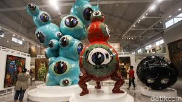
Buat kamu yang berencana mencari oleh-oleh khas tapi unik dari Solo, mungkin bisa mempertimbangkan untuk mencarinya di Pasar Triwindu. Pasar ini dibangun untuk merayakan kenaikan tahta Adipati Sri Mangkunegara VII yang ke-24. Pasar Triwindu sudah berdiri sejak 1939, lho. Nah, kamu bisa banyak melihat barang antik yang dijual di pasar ini, seperti guci, piring antik, lampu antik, hiasan topeng, hingga uang kuno. Tentu saja oleh-oleh semacam ini akan sulit dicari di luar Pasar Triwindu. Pasar ini selalu menjadi tempat favorit bagi para kolektor barang antik hingga turis mancanegara.
Menjadi pusat batik tertua di Kota Solo, Kampung Batik Kauman terletak tidak jauh dari jalan utama Slamet Riyadi. Akses menuju ke kampung ini sangat mudah, bahkan bisa ditempuh menggunakan angkutan umum seperti Batik Solo Trans (BST). Dibanding kampung batik lainnya, Kampung Batik Kauman lebih menampilkan motif batik klasik yang memiliki standar keraton. Selain bisa berbelanja kain batik yang otentik, kamu juga bisa mengelilingi gang-gang sempit di kampung ini dengan berjalan kaki atau menyewa becak. Lengkapi pengalamanmu dengan melihat langsung proses pembuatan batik, yang masih menggunakan cara tradisional.
Rasakan pengalaman menonton pertunjukan tradisional wayang orang cuma di Solo. Kamu bisa menontonnya di Gedung Wayang Orang Sriwedari, yang terletak di Jalan Kebangkitan Nasional No. 15. Untuk menikmati pertunjukan tradisional ini, kamu diwajibkan menebus tiket masuk sebesar Rp20 ribu per orang. Pertunjukan wayang orang ditampilkan setiap Senin sampai Sabtu. Perlu diingat bahwa pentasnya dilakukan pada malam hari, yakni pukul 20.00 WIB. Sementara itu, loketnya dibuka sejak pukul 18.30 WIB. Jangan sampai kehabisan!
Meski namanya memakai ejaan jadul, tapi Gedung Djoeang 45 merupakan tempat wisata yang digandrungi anak-anak muda. Tempat ini menyediakan spot-spot foto yang Instagramable. Daya tariknya terletak pada bentuk bangunan bergaya Eropa moderen klasik. Kamu bisa foto-foto di area luar Gedung Djoeang 45 secara gratis. Namun kalau kamu memutuskan untuk masuk ke gedungnya, akan dikenakan biaya Rp50 ribu. Di dalam Gedung Djoeang 45 terdapat berbagai macam galeri seni.
Destinasi wisata ini akan memanjakan kamu yang pecinta seni. Museum ini dibuat oleh seniman Kurniawan Lukminto, yang memamerkan banyak koleksi seni yang tak ternilai harganya. Kamu juga bisa menikmati karya seni kontemporer, lukisan, hingga mobil-mobil antik di sini. Selain melihat-lihat karya seni, kamu juga diperbolehkan berfoto dengan latar belakang karya seni tersebut. Untuk mengunjungi museum ini, kamu diwajibkan untuk melakukan reservasi terlebih dahulu di website Tumurun Private Museum. Kamu bisa mendapatkan akses masuk gratis maupun berbayar Rp25 ribu per orangnya.
Wisata Alam
Berikut adalah beberapa wisata alam yang ada di Solo :
- Taman Balekambang 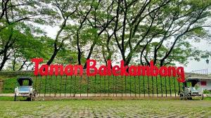
- Solo Safari 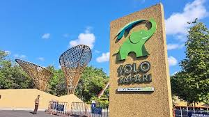
- Taman Sriwedari 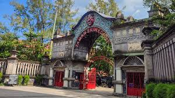
Kamu juga masih bisa menikmati wisata bernuansa alam dengan mengunjungi Taman Balekambang. Ini adalah taman publik paling populer di Solo. Sudah ada sejak tahun 1921, taman ini menyajikan kesejukan dari pohon-pohon yang tumbuh rimbun dan asri. Sangat cocok dikunjungi oleh keluarga, sebab di taman ini terdapat berbagai hewan seperti rusa, angsa, dan monyet, yang dilepas liar. Kamu juga bisa membeli wortel atau kangkung dari penjual di sekitar taman, untuk diberikan makan kepada hewan-hewan tersebut. Usai selesai direvitalisasi pada akhir tahun 2023, kini Taman Balekambang mulai berbayar. Harga tiket masuknya adalah 25 ribu per orang. Banyak pertunjukkan tradisional yang diadakan di Taman Balekambang. Pastikan kamu untuk cek media sosial resmi mereka, untuk tahu jadwal pertunjukan-pertunjukan tersebut. Ada juga atraksi air mancur serta lampu-lampu yang indah, jika kamu mengunjungi taman ini pada malam hari.
Solo Safari merupakan tempat wisata yang baru dibuka pada 2023 lalu. Ini merupakan revitalisasi dari Taman Satwa Taru Jurug. Kamu dan keluarga bisa melihat banyak binatang jinak hingga buas di kebun binatang ini. Siapkan fisik dan tenaga, karena kamu bakal banyak jalan kaki untuk mengelilingi Solo Safari. Selain berkeliling melihat hewan, ada juga pertunjukkan hewan dengan jadwal-jadwal tertentu, mulai dari pukul 09.30 pagi hingga 16.00 sore. Untuk bisa menikmati Solo Safari, kamu diwajibkan membayar tiket Rp45 ribu untuk anak-anak dan Rp55 ribu untuk dewasa pada weekday. Sementara untuk weekend dan hari libur, harga tiket dikenakan sebesar Rp60 ribu untuk anak-anak dan Rp75 ribu untuk dewasa.
Salah satu taman populer yang ada di pusat Kota Solo ini, bisa jadi alternatif tempat wisata yang bisa kamu kunjungi. Berbekal harga tiket masuk sebesar Rp5 ribu, kamu sudah bisa menikmati asrinya pohon-pohon yang tumbuh subur di taman ini. Taman Sriwedari juga biasa dijadikan tempat untuk menggelar pertunjukkan tradisional. Biasanya pertunjukan tersebut diadakan pada malam hari. Di sini kamu juga bisa berinteraksi dengan rusa hingga angsa, yang dibiarkan hidup bebas berkeliaran di taman. Kamu juga bisa memberinya makan dengan wortel atau kangkung, yang dijual di sekitar taman.